ГИДРАВЛИКА · ПОДБОР ПО VIN
Гидравлический насос тандемный OMFB / RG
Точную модель определим по VIN и маркировке. Цена и наличие — по запросу.
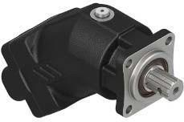
ГИДРАВЛИКА · ПОДБОР ПО VIN
Точную модель определим по VIN и маркировке. Цена и наличие — по запросу.
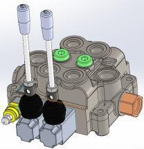
АРТИКУЛ: 47KVD0027
Для гидравлической системы мусоровозов KATMERCILER. Цена и наличие — по запросу.
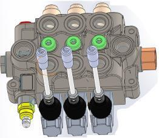
АРТИКУЛ: 47KVD0030
Исполнение подбирается по установленному узлу. Цена и наличие — по запросу.
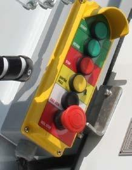
ОБОЗНАЧЕНИЕ: 50BK002 · ЗАДНИЙ
Сзади справа на бункере; установка слева — опция. Цена и наличие — по запросу.
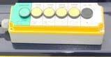
ОБОЗНАЧЕНИЕ: 50BK002 · ПЕРЕДНИЙ
Расположение слева спереди. Цена и наличие — по запросу.
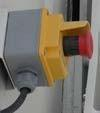
ОБОЗНАЧЕНИЕ: 50BK002 · 2 ШТ.
Комплект кнопок для системы управления. Две фотографии и характеристики в карточке.
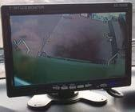
АРТИКУЛ: 50KM015 · SD-7003B
Монитор системы обзора мусоровоза KATMERCILER. Цена и наличие — по запросу.
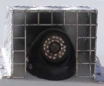
АРТИКУЛ: 50F3001
Подбор по монитору, разъёму и креплению. Цена и наличие — по запросу.
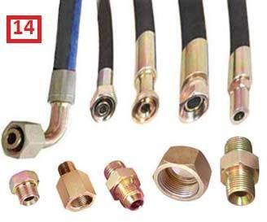
АРТИКУЛ: 40HR020
РВД для гидравлической системы мусоровоза. Цена и наличие — по запросу.
Мы предлагаем услуги выездного сервиса и продажу запчастей для мусоровозов. Наша миссия — обеспечить качественную поддержку владельцам мусоровозов, предлагая широкий ассортимент запчастей и профессиональный ремонт. Залогом успеха является многолетний опыт в производстве, монтаже и сервисном обслуживании коммунальной техники. ИП Блинов С.Е. — авторизованный партнер по сервисному обслуживанию и продаже запчастей ведущих производителей спецтехники.
Оформите заявку, указав ваши контактные данные. Мы свяжемся с вами в кратчайшие сроки для обсуждения деталей заказа.
Предлагаем выездной сервис, поставки и изготовление запчастей для мусоровозов различных производителей.
Позвоните мне!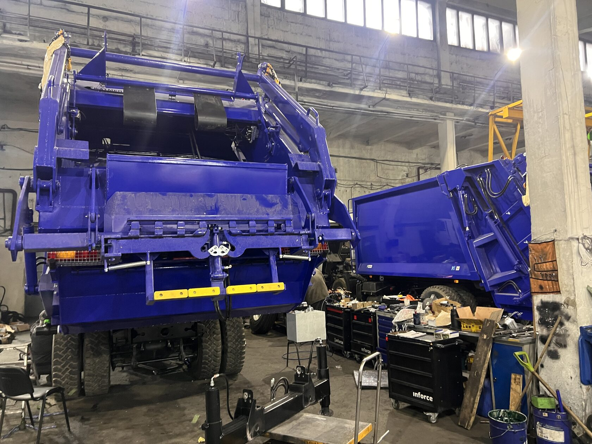
Мы предлагаем полный спектр услуг по ремонту и дооборудованию мусоровозов.
Первичная проверка состояния всех систем мусоровоза.
Диагностика, ремонт, замена систем управления, реле, датчиков, пультов и других элементов.
Изготовление, замена и ремонт заднего борта, выталкивающей и прессующей плит, ножа, кантователя и других элементов.
Установка, замена и ремонт систем подгазовки, освещения и камер обзора.
Диагностика, ремонт и замена КОМ, насосов, гидрораспределителей и гидроцилиндров.
Плановое выездное ТО для поддержания исправности всех систем мусоровоза.
Сертификаты ИП Блинова С.Е. от производителей коммунальной техники.
Нажмите на изображение, чтобы открыть оригинальный документ в полном размере.
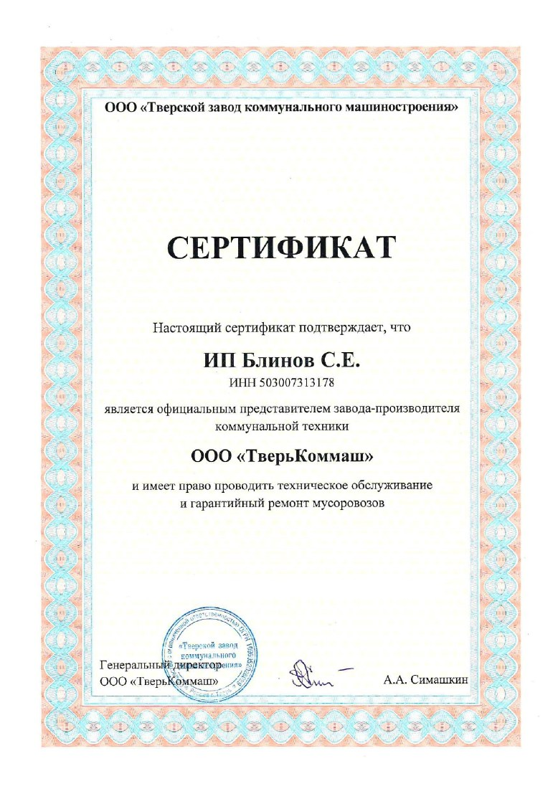
Официальный представитель. Техническое обслуживание и гарантийный ремонт мусоровозов.
Открыть PDF сертификата ТверьКомМаш (новая вкладка)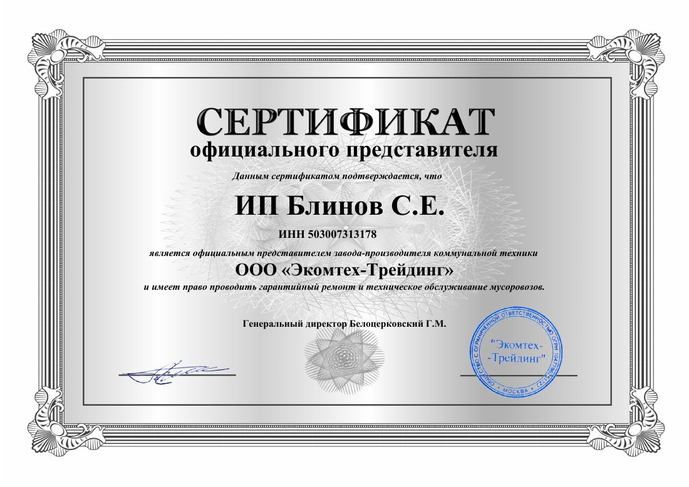
Официальный представитель. Гарантийный ремонт и техническое обслуживание мусоровозов.
Открыть PDF сертификата Экомтех-Трейдинг (новая вкладка)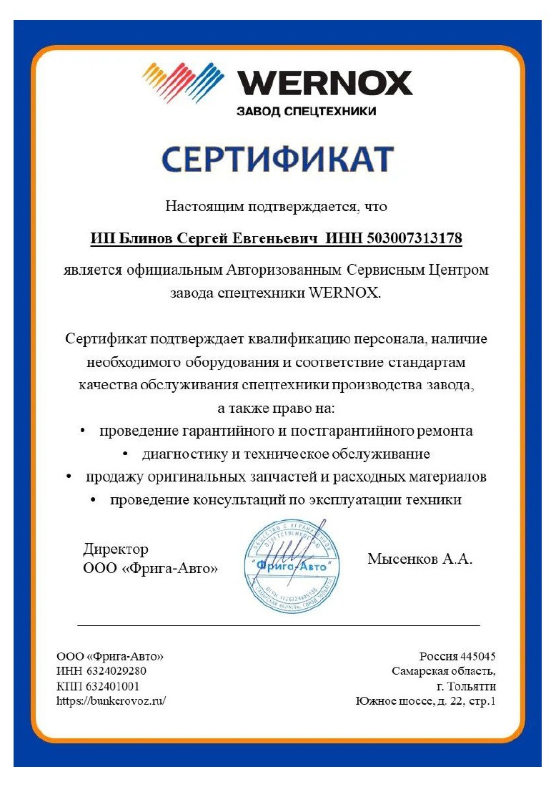
Авторизованный сервисный центр. Диагностика, обслуживание, ремонт и оригинальные запчасти.
Открыть PDF сертификата WERNOX (новая вкладка)Мы всегда на связи, чтобы помочь вам.